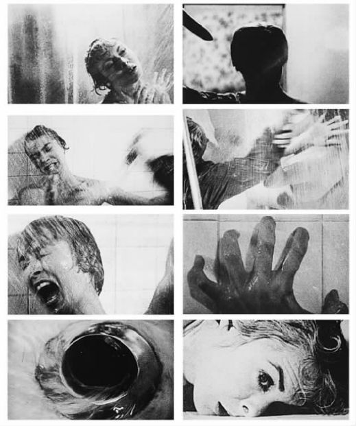
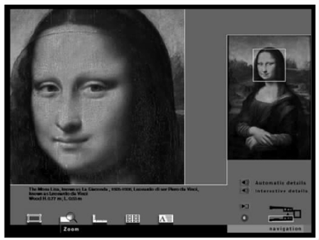
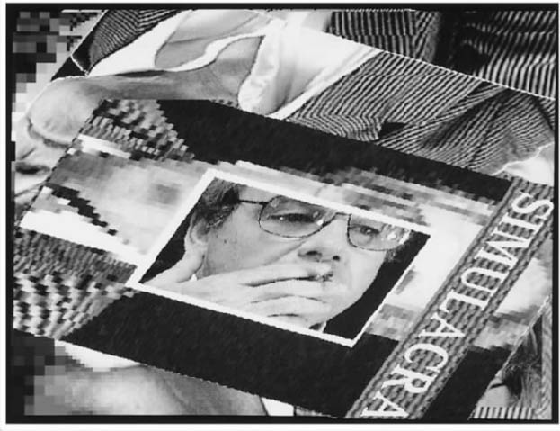

每个人都知道《蒙娜丽莎》和米开朗琪罗的《大卫》是什么样子，但是我们真的知道吗？由于它们如此频繁地被复制，以至于我们即使从来没去过巴黎和佛罗伦萨，我们也觉得自己知道它们。这两件作品都被人无数次地戏弄，大卫被印在拳击短裤上，蒙娜丽莎被贴上了胡子。艺术复制品真是无处不在。我们今天可以穿着睡衣通过网络和光盘只读存储器享受一次全世界博物馆和画廊的虚拟旅行。我们可以探究艺术流派和画家并用放大装置仔细研究作品的细节。罗浮宫的网站提供诸如《米洛斯的维纳斯》这样的作品的全景图像（360度视角），真是引人入胜啊。通过利用虚拟现实技术（其中包括特别设计的眼镜和手套等设备），这种旅行可能让人获得更加多样的感受。和建筑师一样，光线和舞台设计师已经在他们的工作中使用了这项技术。
不仅只有视觉艺术通过新的复制技术使自己的接受面变得越来越宽。歌剧、戏剧和芭蕾表演也定期在电视上播出，越来越多的人通过激光唱片或收音机而不是教堂和交响音乐厅中的现场音乐会知道巴赫和贝多芬的音乐。如果我仰慕斯坦利·库布里克的电影，我可以拥有高解析度的数字化视频光盘（当然是宽屏幕格式的）。新媒体不仅使与“老”艺术的新式互动成为可能，也使得与新出现的艺术门类的互动成为可能，如多媒体表演、网络艺术、数字摄影等。
在这个有着互联网、录像、光盘、广告、明信片和招贴的后现代时代，人类的艺术体验已经发生了深刻的改变。究竟是变好了还是变坏了？艺术家对此又做出了怎样的反应？在这最后一章，我将思考新的交流技术对艺术的影响。我们将“回到未来”，研究未来的技术是如何在地球村通过数字化手段传播过去的艺术的。在这方面有三位理论家是我们的向导：沃尔特·本雅明、马歇尔·麦克卢汉和让·波德里亚。他们的态度既有充满热情的认可，也有充满冷嘲热讽的怀疑。
也许画家的形象和音乐家的声音的力量在复制品中会被销蚀，这样我们就遗漏了一些在原作中保持的东西。哲学家和社会批评家沃尔特·本雅明（1892—1940）在他1936年的文章《机械复制时代的艺术作品》中把这种正在消失的特性称为“灵韵”。他得出结论说这种灵韵的消失并不是一件坏事，这听起来也许有些奇怪。由于受到马克思主义的历史唯物主义的影响，本雅明称赞由摄影术带来的各种更新的、更民主的艺术形式。他相信大规模的复制会促进新的批判性感知模式的出现，从而为人类的解放做出贡献。
古老的艺术作品的灵韵来自它们在宗教仪式上的特殊力量以及它们在时空中的唯一性。回想起我们遇见过的许多例子——澳大利亚土著的圆点画、夏特尔大教堂的窗户、非洲钉满钉子的神偶雕塑和古希腊的戏剧，这些艺术与公共典礼和宗教仪式之间联系紧密。出于某种原因，特殊和独特的物品被装饰、使用并当作这些仪式的一部分被珍藏，它们由此而获得了一种珍贵的、神圣的“灵韵”。但是当人类创造了机械复制模式（如雕版印刷）并以此来分享和传播艺术的时候，艺术已经发展了许多个世纪。特别是摄影术的发明使得“原作”不那么重要了。摄影术对艺术作品的唯一性提出了挑战。然而，本雅明认为当灵韵被放逐后会出现一些好东西。本雅明以电影作为新媒体的主要范例，设想电影会通过慢镜头和特写镜头等技巧提高观众的感知水平。与本雅明同时代的其他理论家指责电影是一种被商业化行为所控制的拙劣的大众艺术形式，变成了国家的政治宣传工具（特别是在法西斯时代）。本雅明将电影的特征与先锋艺术的目标和结果进行了比较，肯定电影是一种潜在的反法西斯主义和促进民主的艺术形式。
电影中的蒙太奇或对快速剪接、快速剪辑的运用被想象为对观众正常感知模式和节奏的一种冲击手段。本雅明认为达利和布努埃尔等超现实主义电影制作者所寻求的方式会拓展人类的感知力。本雅明也赞扬了电影表演中的“距离感”。因为观众会通过特写镜头和已有的知识来认可银幕上的明星，他认为人们不会像看舞台上表演的戏剧一样陷进电影所制造的虚假现实中去。本雅明赞扬了电影表演中的距离感，并将其与贝托尔特·布莱希特的先锋戏剧中的“间离效果”相比较。在布莱希特的《母亲的勇气》中演员直接向观众说话，其目的就是让观众意识到他们是在看戏，这样就能使观众做出有深刻思想的反应，以此来取代他们对表演的情感认同的寻求和逃避现实的消遣态度。
本雅明辩解道，即使观看通俗的卓别林电影的普通观众也能获得深刻的批判意识。他通过比较认为，毕加索或超现实主义的先锋作品将观众推开，暗示观众太愚蠢而不能理解为什么这样的艺术是重要的。电影更加民主，每个人都可以“接近”电影，他说：
今天的人很难认可本雅明的乐观态度。确实，电影很受大众欢迎，但是就像本雅明预计的那样，电影中的高雅艺术和大众艺术之间的差别并没有消除，别忘了在第四章提到的法国社会学家布尔迪厄的发现。像让——吕克·戈达尔这样的政治激进导演所拍摄的电影，一般社会公众不会去看（也理解不了）。由电影制作者引入的新技巧不同于本雅明所强调的那些特征，它们也许会产生一种截然不同的影响，这种影响不必是进步的。数字化技术提高了电影的视觉写实水平，这一点很典型地表现在《星河战队》、《黑客帝国》等影片中。但是很难将这些充满救世主式的英雄、血腥枪战和外星人灭绝地球的电影阐释为含有进步政治寓意的影片。此外，我们还可以质疑本雅明在某些价值上的信念，如距离和间离效果。那些通过描写更多愤世嫉俗的、类型化的动作英雄（如《异形：浴火重生》和《虎胆龙威》的续集）来促进距离感产生的电影看起来似乎很缺乏人性。这些影片的第一部更加感人，安排了富有同情心、能够表现和激起情感冲突的主角。
或者，思考一下继卓别林之后那些作品既通俗又能激起评论界称赞的导演，如阿尔弗雷德·希区柯克和斯坦利·库布里克的表现，本雅明会把他们的电影称作是“进步”的吗？他称赞卓别林的电影给观众提供了“视觉、情感享受和专家视角的直接、紧密的融合”。希区柯克是一位有才气的导演，但是专家们注意到许多一般观众不会注意的事情，比如电影《精神病患者》（也译作《惊魂记》）中臭名昭著的浴室杀人场面的复杂镜头组合。希区柯克还因为把演员和畜牲相提并论而臭名远扬，他的电影中表演的间离效果（如果有的话）可能来自他对演员个人价值的不看重。他的社会寓意是模棱两可的，在他的电影《鸟》的结局中，男主角、他的家人和女友在被鸟打败之后，开车陷入被包围的境地，这意味着什么呢？
库布里克在电影《乱世儿女》（1975）中借助烛光拍摄，在《闪灵》（1980）中运用摄影机稳定器拍摄，他就电影技巧的可能性所进行的探索再次令专家们印象深刻。但是被批评家和其他导演所称赞的电影特点不一定能被观众认可。库布里克的电影中的表演也没有运用一种间离效果来促使观众产生批判性的感知。观众也许被库布里克所使用的瑞安·奥尼尔和汤姆·克鲁斯等一批受人欢迎的英俊演员所吸引，从而更加认同电影的内容并将感情投入其中。和希区柯克一样，库布里克的大部分“政治性”电影如《全金属外壳》（1987）或《奇爱博士》（1964）都传递出难以阐释的模糊信息。他根据安东尼·伯吉斯的小说改编的电影《发条橙》（1971）也是一个例子，这部小说是对意识控制如何束缚人的个性的批判，但是这部电影最能激起观众反应的一幕却是前面部分亚历克斯（马尔克姆·麦克道尔饰）随意强奸和杀人的刺激场面。就连称赞库布里克最后一部电影《大开眼戒》（1999）的批评家们也在这部电影中看到了一种对待婚姻和家庭的保守观念。

图22 阿尔弗雷德·希区柯克的电影《精神病患者》（1960）中的部分镜头剪辑，选自恐怖的浴室杀人系列场景，其中的角色由珍妮特·利和安东尼·珀金斯扮演。
此外，和过去的艺术媒介相比，电影并没有使艺术生产方式变得更民主和更容易接近。本雅明在将某些价值和可能性归因于媒介 的时候显得太天真，他认为媒介具有一种内在的政治进步特质，这种特质似乎与仔细思考谁在使用和控制媒介 没有关系，与大规模的企业联合体（如时代华纳或迪士尼——美国广播公司）没有关系，这些大公司将能产生经济收益的模式化类型电影与汉堡包店的销售花招、新闻里的公共关系和录像带的销售结合在一起。本雅明的一些评价听起来自相矛盾，例如他说：“公众是审查员，但却是心不在焉的审查员。”一群心不在焉的公众距离一群头脑空空或者意识受别人控制的公众太近了，这很危险。

图23 使用放大工具，观众可以近距离观看由莱昂纳多·达·芬奇画的《蒙娜丽莎》（1503—1505），选自罗浮宫1997年制作的《收藏和宫殿》光盘只读存储器。
最后要说的一个观点是：尽管有越来越逼真的复制技术，来自过去的艺术杰作的灵韵并没有 真正消失。罗浮宫的光盘只读存储器提供了一种对《蒙娜丽莎》的美妙的观看效果。人们通过电脑屏幕几乎可以看清她的毛孔，这种复制品比小且昏暗的原作更加明亮，从中可以看到背景中更多的细节。放大镜工具使得观者可以仔细观察讲解员列出的局部特写——她高高的额头、微笑时微翘的左边嘴角、安详地叠放着的手。然而人们还是朝圣般地去看罗浮宫里莱昂纳多的原作。当各国游人列队走过这关在玻璃箱子里的微笑的神秘面容时，这种敬畏的感觉几乎是宗教性的。乔康达夫人 [1] （即蒙娜丽莎）的灵韵绝不是海市蜃楼，尽管当观众想通过他们自己的机械复制设备去捕捉她的灵韵的时候，其中具有某些令人悲伤的讽刺意味。
加拿大人马歇尔·麦克卢汉（1911—1980）也相信新技术会促进民主政治并提升人的感知。在评价电台、电视、电话和电脑的时候，他提出了为人所熟知的“媒体即信息”和“地球村”等理念。麦克卢汉觉得新媒体在艺术家那里得到了最好的理解和研究，他们是把握时代的思想以及交流的新可能性的先锋。他提到了艺术家在社会中的特殊性，认为他们是具有“完整认知”的“无形人”。
麦克卢汉的学术生涯开始于文学批评。他将古代的作家和现代的乔伊斯、艾略特和庞德等放在一起研究，在研究的过程中他论述人们读写能力的提高如何改变了口头文化（像荷马时代的古希腊人一样）。印刷术和书的发明促使社会发生了许多变化，促进了个人主义、线性思维、个人隐私、对思想和感情的压制、社会分离、专业化甚至现代军事化（书面的命令可以很快传达到军队中去）的发展。但是麦克卢汉认为，新出现的媒体将会恢复人们被读写压抑的右脑功能。
在声称“媒体即信息”的时候，麦克卢汉的意思是媒体的结构比传播的内容更重要，它们从更深的层次塑造了人类的意识。一方面，印刷媒体孤立了独自阅读的个体；另一方面，新媒体促进了人们之间的可联系性，也使得超越狭隘政治障碍的国际共同体（“地球村”）成为现实。麦克卢汉和本雅明一样，也是一位新媒体的狂热推崇者。他也很不重视“高雅”艺术和“大众”艺术（或公众艺术）之间的差别。本雅明将注意力集中在电影，麦克卢汉主要研究电子交流媒体，特别是电视。麦克卢汉对于谁控制了生产力没有太多兴趣，他对电视所带来的思维和感知方式更感兴趣。新媒体在改变我们的感觉甚至我们的大脑方面可以提供帮助或补充，因为观众在不断更新的输入信息面前必须填补自己的知识空白，因此新媒体能促进人类的非线性和“马赛克式”思维的发展。
当我们回归某种具有社群性、更似口头文化的东西（它强调聆听、触摸和面部表情）时，具有更广泛的参与性的新“地球村”将恢复人类已经失去的“原始”能力。电子媒体不仅将恢复右脑的联系和洞察能力，也将恢复我们的综合和想象能力：
就像对待本雅明一样，我也要质疑麦克卢汉对新媒体的热情。为了解释这些，让我们来考察两种影像产品：第一个是比尔·维奥拉的流动影像艺术，第二个是音乐电视。
在大量发布之前，比尔·维奥拉用最先进的录像技术（由索尼公司提供装备）来进行艺术实验，他的作品通过编辑和装置展示来探索人的感知模式。他通过将活动影像投影到画廊的墙上或者人的身上来制造出一种整体的氛围。但是除了作品所使用的新颖的技术以外，维奥拉还利用旧的题材。由于对神秘主义有持久的兴趣，他游历并研究了多种世界宗教传统，最终完成了一些非同寻常的、令人着迷的展览。
在《拿十字架的圣约翰》这一作品的展室里，维奥拉将令人吃惊的视觉形象与文字文本、阅读联结在一起。整个房间充满了用电子静电噪声制造的扰人的风声和暴雨声。在1979年的《光热景象》中维奥拉用摄像机捕捉了几乎不可能被捕捉到的海市蜃楼，作品中漫射的沙漠热力汇成了由海洋和棕榈树组成的绿洲幻象。在《我真不知道我喜欢的是什么》中维奥拉花了三周时间在寒冷的南达科他州拍摄一群野牛的场景。当艺术家把展示它们在大草原上吃草当作一种冥想方式的时候，它们长时间的静止成为了寂静荒漠中的一种镜像。
维奥拉受到波斯神秘主义者鲁米的影响，鲁米在1273年写道：“新感知器官是应需要而形成的，因此，提高你的需要也许能提升你的感知力。”对维奥拉来说，像录像这样的一门技术并不止于录像本身。他的看法与麦克卢汉关于媒体具有内在的改变感知的可能性的说法相抵触，因为他认为一位艺术家为了实现感知的提升必须先工作。维奥拉给流动影像艺术家挑毛病的时候说，“技术远远走在使用他的人们之前”。那些给予维奥拉灵感的神秘作家运用写作 来表达他们的非线性思维和抛弃逻辑的愿望，这也很令人吃惊，这种想法与麦克卢汉对写作如何限制思想的描述形成了对照。
维奥拉充满冥想色彩的流动影像需要观众耐心地观看，这也许能解释我的学生们为何抱怨这些作品太“沉闷”，因为他们是受音乐电视直接刺激的一代。这些精心制作的三分钟流动影像以镜头的快速剪切和蒙太奇手法为特征，它们在世界范围内的音乐电视节目中播出。音乐的流动影像不需要聚精会神，它们能在做其他事（如做家务和给朋友打电话）时随意观看，它们以多样的画面、连续的剪切和充满动感的声音在观众中培养了一种散乱的碎片式的观看方式。当然，麦克卢汉在某个方面是对的，那就是音乐电视不会促进线性思维。蒙太奇常常在感觉而不是叙事逻辑的基础上来连接场景。然而，很具讽刺性的是，这些流动影像中的很多作品都讲述戏剧性的小故事（典型的故事有男孩遇见女孩，对抗警察或获得名声）。音乐电视已经变得比它大部分的观众都老了，它播放更多摇滚明星的传记片和与历史有关的节目（甚至出现描绘本台年事已高的前任节目主持人的怀旧性节目）。线性思维有可能以一种反弹的态势回归！
音乐电视最令人不安的是它们被市场力量所控制，促进了均质化单一文化价值的蔓延。说实话，只在斯皮克·约恩泽和约瑟夫·卡恩这样的导演制作的作品中才偶然有创新的“艺术”的音乐流动影像，但大体上，音乐的流动影像都是使人麻木的，其中只有公式化的魔幻镜头、场景设置、虚假的纪录片式的街头场景或霓虹灯动画。被闪过的汽车和穿皮毛大衣或比基尼的美女弄得杂乱无章的场景设置使音乐电视成为最好的产品促销工具。音乐电视天衣无缝地变换着为洗发水、李维斯牛仔服、牙膏甚至武器、万事达卡、凯迪拉克和人寿保险等激起购买欲望的广告。这些持续不断的广告与音乐电视本身的基本市场目标——推销明星相结合，从麦当娜到艾米纳姆和西斯可，这也许会令本雅明和麦克卢汉都很吃惊。也许他们很难相信音乐电视促进了观众的民主参与，同时还培养了全球观众的批判性认知，使他们汇集成一个真正的地球村。相反，音乐电视威胁着要同化整个世界，将全球都变成美国那些挤满了麦当劳和盖普的品牌店的郊区商业街。
第三位也是最后一位我要考察的研究新媒体的理论家是让·波德里亚，他是一位法国哲学家，常被别人称为“后现代主义的高级牧师”。他提出的理念常常在关于后现代艺术家的批评性讨论中被引用。本雅明和麦克卢汉分别受到电影和电视的启发，但是波德里亚是研究新屏幕——电脑显示器的理论家。他描述说观众不仅仅是心不在焉（让人想起了本雅明的术语）而且是没有心，他们迷失在自我形象中，沉浸在自己的电脑终端中。他的思想在许多方面（用一个严重的双关语）可以说是一种拥抱千年幻灭的“终端”哲学。
受麦克卢汉影响的波德里亚同样靠他口号式的评论和聪明（但复杂）的习语转用而著称。波德里亚用夸张的风格写作（追随他的哲学先辈弗里德里希·尼采），因此常常很难搞清他是在严肃地表述还是在开玩笑。波德里亚的后现代词典中的关键词有：仿真、超真实、大众的内爆、自我诱惑和邪恶的透明性。除了对电脑的研究，他又研究了电视（特别是新闻的覆盖）、现代艺术和文学，甚至高速公路、时尚、建筑、娱乐以及像迪士尼乐园这样的主题公园。下面让我们来研究他的关键词。
超真实 的东西是指某些“比真实还要真实”的东西。一些伪造和人工仿制的东西变得比现实本身更具权威性，包括高级时尚产品（比美更美）、新闻（集会的原声摘要决定了政治竞选的最终结果）和迪士尼乐园。仿真 是将复制和模仿的东西当作现实的替代品。政治候选人的电视演说——在电视上播放只供观众观看的东西是这方面的好例子。愤世嫉俗的人也许会说现在的许多婚礼是为拍摄录像和照片而举行的，举办了一次“漂亮的婚礼”意味着这场婚礼在照片和录像中看起来很好看！
波德里亚喜欢举的一个例子是迪士尼乐园。他解释道：

图24 后现代理论家让·波德里亚的形象被数码摄影家转变成《拟像手册》（1987）中的图像，这种遭遇和他的理论很相符。
波德里亚听起来既像是迪士尼乐园的一个批评者，又像是对其着迷的一个狂热爱好者。他展示出对其他新媒体同样又爱又恨的感觉。
波德里亚运用“淫秽”这个词来描绘许多具有诱惑性但又具有虚假即时性的电视节目。电视颠倒了柏拉图关于现实与模仿间关系的表述，因为表征在真实之前，甚至会规定真实。波德里亚引用了许多例子，如有关足球骚乱、海湾战争和美国入侵索马里的新闻报道。现场直播电视节目的仿真是可憎的和非常接近对象的，它变得比真实还真实，或者可以称作“超真实”。
自从他指出仿真的问题后，一些波德里亚的著作好像不仅仅批评这种现实而且宣布了人类社会的厄运。他描绘了在新的全球媒体散布可怕形象的过程中人类出现的冲向自我毁灭的千年赛跑。波德里亚的短语“邪恶的透明性”表明像《圣经》中、古希腊悲剧中甚至恐怖电影中的老式邪恶已经被消减为零了，它们被削平和复制成数百万平常的图像。当公开展示变成超真实的时候，对暴力的描写规定了真实的标准。我们能逐渐明白为什么在波德里亚的观点中像切尔诺贝利核泄漏或“挑战者号”爆炸这样的可怕灾难“仅仅是全息摄影或拟像”。他对媒体关于黛安娜王妃的致命车祸和约翰·F.肯尼迪遇刺事件的持续报道也会持相似的评价。
然而，有时候波德里亚的话听起来并不那么愤世嫉俗，他甚至还会设想抵抗暴力展示的其他可选方法。他谈到过“微妙的报复”的“一种原始的策略”以及“意愿的拒绝”。不幸的是，他说的这些都不完全。他提示说在超真实的节目中观众的愉悦和参与的某些方面是具有创造性甚至颠覆性的。如果我们自己诱惑自己进入公开的展示当中，那么我们也承担了一些责任。在这里“自我”是至关紧要的：
就像其他的后现代批评家和理论家一样，波德里亚也因为道德和政治反动而受到批评。如果愤世嫉俗和世界厄运是他发出的信息，那么一些人会选择拒绝接受。但是在20世纪80年代的艺术世界中，波德里亚的观点看起来很有洞见，他写道：“在整个现代艺术的痉挛状运动之后有一种惯性，有一些不再能超越自身的东西断绝了自身与周围的关系，只能以越来越快的频率重复自己。”他的话被理解为：艺术家已经开始毫无意义地重复已经存在的形象，这种分析看起来与那个时代许多年轻艺术家的情况异常吻合。波德里亚的意思是艺术家被其他走向普遍社会空虚和失望的力量边缘化了，因此那种强调个人创造和自我表现的理想再也行不通了。
具有讽刺意味的是，波德里亚的看法被用于吹捧新一代时髦的“艺术明星”，他们的作品被卖到了天价。波德里亚的理论被引用来赞扬像辛迪·舍曼和戴维·萨莱这样的艺术家，他们以一种隐藏的、带有噩兆的方式重新利用过去为人所熟悉的图像。舍曼（在第五章被当作一个解构性的女性主义艺术家讨论过）在她早期的《无题的电影剧照》和更近一些的作品中都创造了一种陌生的、难以捉摸的自我肖像，这些作品用惨白可怖的形象改画了过去的大师们表现女人的作品。因为她利用了以前存在的图像，好像她自己就是作为一种仿真而存在。萨莱的画与杰克逊·波洛克这样强有力的现代主义者的画比较起来，显得粗略且没有分量。萨莱的作品也依赖令人麻木的熟悉图像，他的画面也是模仿他人的，原原本本照抄那些好像是随意混杂在一起的熟悉形象——“肥猪”，这是《国家地理》杂志中身体按照标准色情动作张开的“原始”裸女。
当各个少数族裔群体的艺术家重新相信艺术具有表达感觉或者传递“信息”的力量时，波德里亚似乎与20世纪90年代的艺术世界无关了。黑人或亚洲艺术家运用老套的批判和冷嘲热讽的方式呼吁人们关注种族主义，像奥尔兰这样的女艺术家想揭示西方文化中女性美的普遍形象所产生的破坏性影响。在更近的时期中，为了让我们想起人的必死性（就像赫斯特的鲨鱼切片一样）或者激起敏感的性的诱惑力，像达明·赫斯特和查普曼兄弟这样很红的“年轻英国艺术家”也表现出对图像力量的信仰。愤世嫉俗在这种作品中也许能发挥一些作用，但是愤世嫉俗更多与产生震惊效果并获得名声的欲望相关，而与波德里亚的更深层次的愤世嫉俗（人们沉迷在仿真世界里）无关。
本章的结尾如果只谈到数码时代的艺术而忽视了新媒体最正宗的产物，这是不合适的。在谈到艺术在新千年的发展方向的时候，我们会被带离高雅艺术，离开伦敦或纽约的城市画廊和博物馆的艺术场景或者主流期刊上所讨论的艺术，进入波德里亚、麦克卢汉和本雅明试图描绘的社会领域。有许多艺术作品或者至少是创造性活动发展并融合到新媒体中，例如活动影像游戏、网络艺术、超文本文学、日式动画电影等等。这激起了那些使用迷迪和多轨技术的音乐家与主要的录音工作室竞争，他们将音乐设备与地下室或车库里的电脑相连。在希望做大音乐的想法下，他们上传文件到名为MP3.com的网站，希望能绕过音乐的市场体系。
多媒体艺术生产现在雄心勃勃，如达达网络表演组合的作品《约拿和网络鲸鱼》被描绘为“《圣经》的技术化幻想”，其中运用了计算机投影与真实的演员、歌手、舞者以及网页“样本”（受到了说唱音乐从已经录制的音乐中取样来进行创作的启发），使我们重新回顾约拿滑稽然而却有道德意义的故事。这个群体通过在线影像以直播的方式将舞蹈和网络相结合的产品传播到世界各地。
我不能在这里讨论所有的新艺术媒体，如果这样，在这本书出版之前，我的讨论就已经过时了。我将以谈论有关网络艺术的几件事情和它的三个关键特征——多媒体、互动性和超文本来做一个简单的总结。
一个艺术网站不仅是一个提供静态数字图像的在线画廊。通过使用java和shockwave这样的插件程序和附加软件以及音响和声音样本，这样的网站能创造逼真的、有深度的、能在空间中移动的多媒体视像，就像展示罗浮宫庭院和金字塔的360度移动摄像头一样。网络艺术挑战影像游戏技术产生令人惊奇的三维逼真效果只是时间问题。当游戏者穿过陌生的地形，在电脑合成的海上冲浪、在全国汽车比赛协会的跑道上赛车或者从陡峭的斜坡上滑雪而下的时候，这些游戏提供了令人吃惊的三维空间渲染效果。对这些游戏着迷的年轻玩家不仅称赞它们令人目瞪口呆的逼真效果和令人沉浸其中的特质，同时也赞扬游戏规则和互动选择的复杂和多样性，其设计充满了创造性。
一种网络艺术也在开发网络的互动性，它鼓励浏览者去点击图像以展示一首诗、一个新图像或分叉路线。互动性可以将浏览者联结为某个地球村。许多“官方”或已建好的艺术网站得到了大学或者博物馆的支持，它们用最先进的技术来展示艺术家的艺术实验。现代艺术博物馆在纽约的网站展示了像珍妮·霍尔泽这样的艺术家的作品，她在屏幕上展示自己的作品，为访问者提供表达选择或者修改意见的机会。这种互动网页需要观众在一个登录栏输入信息，然后这些信息就会和以前的建议一起在一个新的屏幕上演示出来。
为了说明网络的第三个特征——超文本，我们可以考察在现代艺术博物馆网站上的另外一个由蒂姆·罗林斯和K.O.S.（“幸存的孩子们”）制作的网络艺术项目。他们的合作源于罗林斯在纽约当一名特殊教育老师的工作，罗林斯和他的学生们用新的翻译方式和视觉图像来实现古典文学课本的现代化，他们后来演示并与其他年轻观众讨论了相关议题。他们为现代艺术博物馆做的网页是以埃斯库罗斯的《被缚的普罗米修斯》为蓝本的。网页生动活泼的链接使得访问者可以惬意地找到由梭罗或罗林斯自己翻译的文章，聆听real格式的音频文件样本，观看世界各地对课文内容的表演并访问公告栏（其中也讨论各种话题，如普罗米修斯是否受到了宙斯的不公平对待）。
设想一下我们的理论家们会对万维网做出怎样的评价呢？本雅明也许会对网络作为一种相当民主的艺术空间而印象深刻。它解放了社会生产力——至少在世界经济发达国家是这样——以致几乎人人都可以参与。创立一个能向全世界发布的网址，你就可以马上被人认识，为此你不必成为一位有学位或有画廊代理的艺术家。为电影和书籍的爱好者设立的网站吸引了数量巨大的访问者和点击率。本雅明在今天也许会觉得心里不安，因为逐渐蔓延的粗暴的商业化行为开始入侵这类网站，“免费”的网络服务器获得了横条广告和弹出广告的资助，电子邮件遭受到了垃圾邮件之害。
麦克卢汉也许会对网络抱一种模棱两可的态度。因为超文本是非线性的，链接的方式引诱人点击并引向更进一步的探索之路，网络就这样培养了“马赛克式”的思维。但是网络用超链接的方式将文字和图像进行了有效结合，这混淆了麦克卢汉关于口头语言和视觉语言、左脑和右脑之间区别的表述。口头语言和文学的区分被蒂姆·罗林斯关于《被缚的普罗米修斯》的网站给弄模糊了。它运用最先进的动画、公告栏和音频输入技术，但又以线性文本 为中心。实际上，这本著作是由埃斯库罗斯写的，他在文学发展的萌芽阶段写下的书却成为了麦克卢汉想要拆解的对象！网络“地球村”的影响看起来太模糊不清了。网络将人们联结在一起，它用摄像镜头加强了人们在虚拟空间中的接触感。然而，网络的使用者在屏幕面前还是孤单的，在这里我们似乎看到了麦克卢汉所说的“无形人”，但是他真的有“完整的认知”吗？
最后，波德里亚很久以前就预料到了一种情况，那就是在虚拟空间和网络的时代中现实消失，我们被电脑屏幕深深吸引。作为人们为在线游戏或个人空间而创造的密友或神之化身，网络将毫无疑问地证实波德里亚关于大众通过仿真而自我诱惑的说法。我们在前面已经看出，他对于自我诱惑的认识似乎是模棱两可的。如果就像波德里亚所描述的那样，人们坐在电脑终端前面，沉浸在心灵的空虚中，自我全身心地沉浸在电脑屏幕里，这也许不是好事。他说：“传递到我们身上的过量信息实际上是一种电刑，它产生一种持续的短路，在那里个体烧毁了自己的线路并失去自身的保护。”波德里亚的话听起来是那么愤世嫉俗，但是自我诱惑也许会有更多积极的因素，那就是，自我诱惑对那些控制着互联网或大众媒体的幻象和诱惑的人产生了影响。虚拟空间真是一种充满空虚和“透明罪恶”的地方，还是一个充满创造性的、智力性的和有益性的感官探索和公众联系的地方？艺术家和普通网络冲浪者同样要对此做出一种判断。